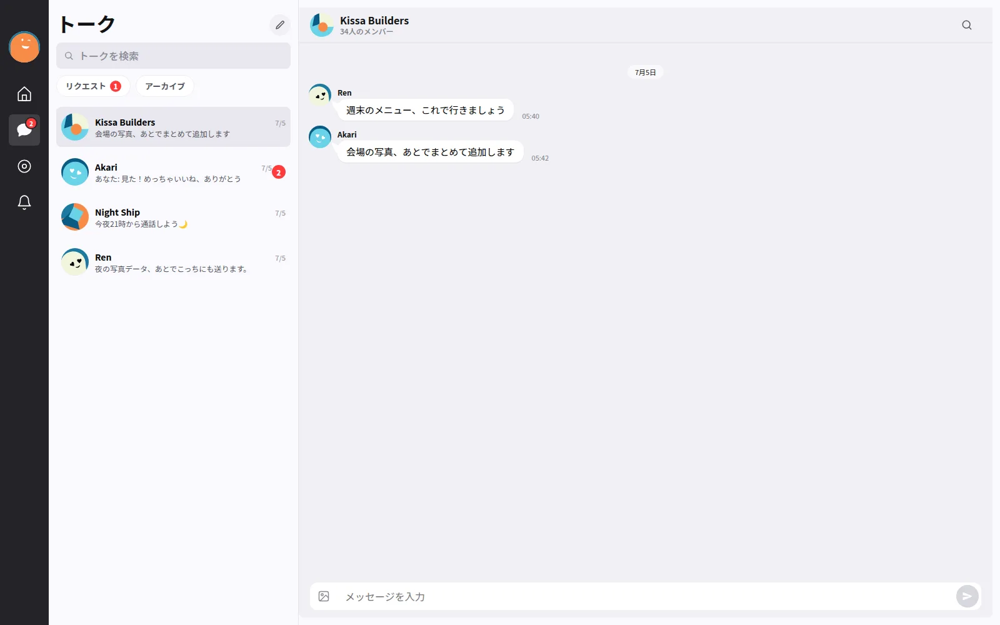
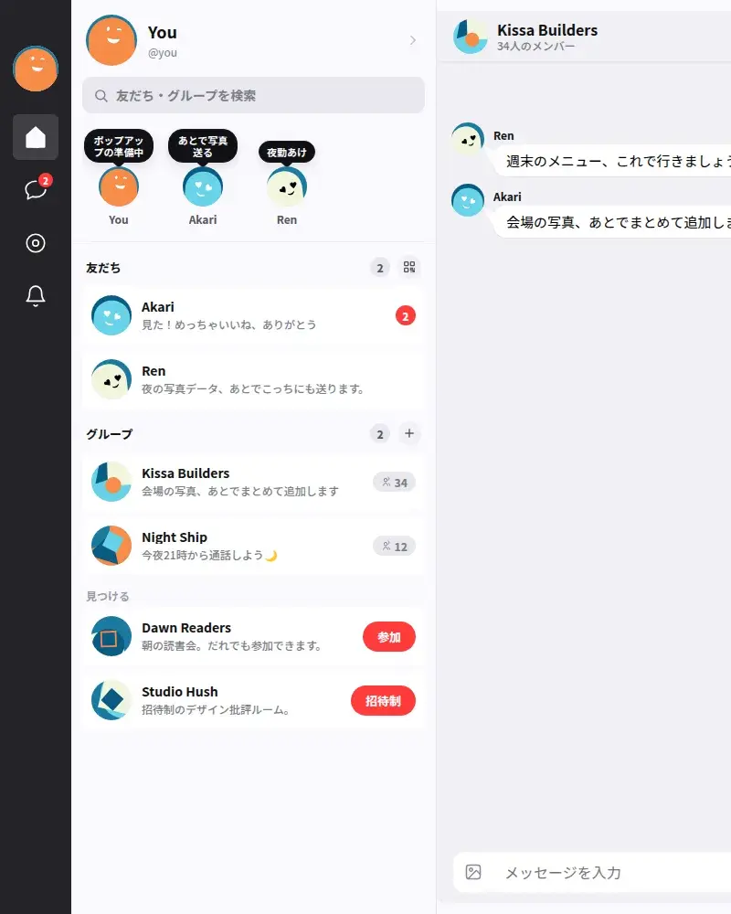
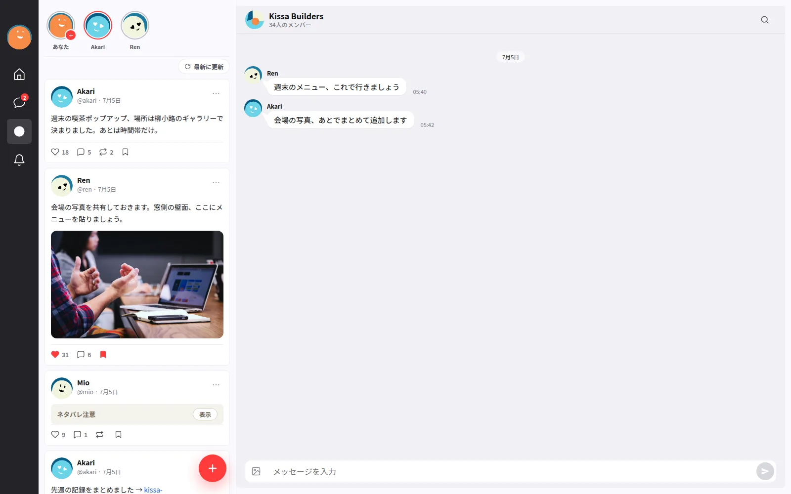
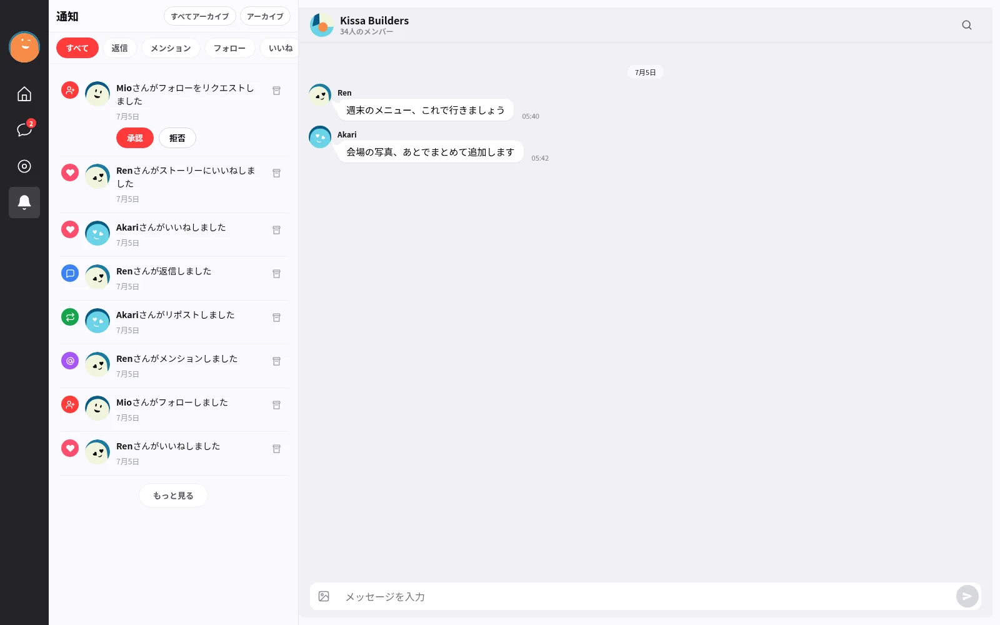
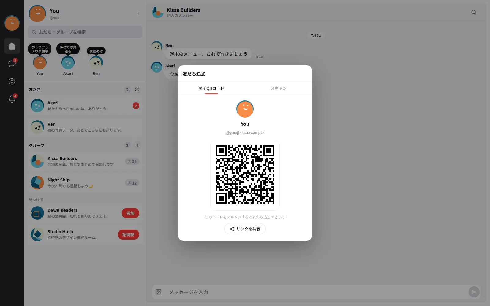
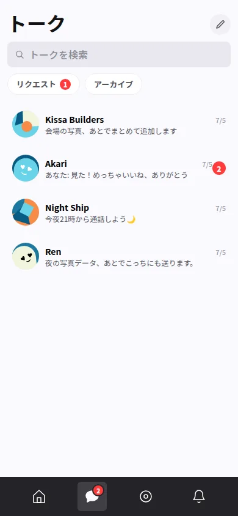

Self-hosted, talk-first messenger.
yurumeet は、LINE のようにトーク中心で使えるメッセージングアプリです。 中央のサービスに預けず、自分のサーバーに置いて、自分たちだけのトークにできます。 DM・グループ・タイムライン・Story まで、ぜんぶひとつの画面にまとまっています。
どこかにホストされたサービスではありません。自分で動かすソフトウェアです。

画面は4つのタブ
ホーム、トーク、タイムライン、通知。画面のはじに並ぶレールが、 そのままこのアプリの目次です。未読はタブのバッジで届きます。
ホーム
アプリを開いて、最初に戻る場所。友だちとグループの入口です。
- 友だちとグループがひとつのリストに並びます。新しいトークは、ここから始めます。
- ノートに「いまの一言」を残せます。
- QRコードで、その場で友だちを追加できます。

トーク
DM もグループも、吹き出しで読んで吹き出しで返す。 このアプリの中心です。
- DM とコミュニティチャットが、同じルームリストに並びます。
- 未読バッジは、タブとルームの行に出ます。
- リクエストとアーカイブで、受け取る会話を自分で選べます。
タイムライン
投稿と Story の、公開の場。トークの隣にあります。
- フォローしている人の投稿が流れます。いいね、返信、リポスト、ブックマーク。
- 上のリングからStoryを開けます。
- 「いまどうしてる?」から、そのまま投稿できます。

通知
できごとは、ここに届きます。
- フォロー、いいね、返信、メンション、リポストを種類で絞り込みます。
- フォローリクエストは、この場で承認・拒否できます。
- 読み終わったらまとめてアーカイブ。未読はタブのバッジで分かります。

QRコードで友だちを追加
自分のコードを見せるか、相手のをスキャンするか。 QR の中身は yurucommu と同じ形式なので、アプリが違っても、 サーバーが違っても、このコードひとつで友だちを追加できます。

スマホでも、同じサーバーに接続
スマホでも、同じトークをそのまま使えます。ホーム画面から開けば、DM もグループもタイムラインも Story も、片手で扱えます。

自分のサーバーで動かす
yurumeet は、中央のサービスに預けるアプリではありません。自分のインフラに置けば、アカウントもトークも自分の手元に残ります。中身はぜんぶオープンなので、確認して、必要なら自分で変えられます。
自分でデプロイして始める
yurumeet は中央でホストされるアプリではありません。Cloudflare に自分でデプロイして、トークを始められます。
現在は Cloudflare へのセルフホストを利用できます。
Takosumi 導入は検証中です。
固定リリースからの作成、認証、キュー、定期実行、migration、公開
URL、rollback、destroy を確認できるまで、Takosumi
の公開導線は有効化しません。
yurumeet.com はこの紹介サイトです。
実際に動く yurumeet
は、あなたが選んだ場所にデプロイした実行環境のほうです。このページ自体はアプリではありません。
# managed source ref=<verified-release-tag> path=deploy/takoform # available self-host path bun install bun run check # then follow your operator-owned self-host runbook
Cloudflare へ直接デプロイ
下のリンクから、自分の環境へデプロイします。
自分の環境を管理
root OpenTofu module を使い、credential、承認、migration、 recovery を自分の operator authority で管理します。
トークする
自分のサーバーのアカウントでログインして、トーク中心の UI を開きます。